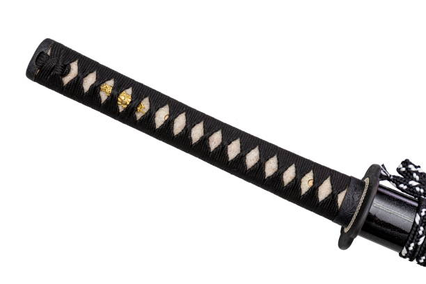

Storia
L'impugnatura della spada ha una lunga storia
che risale a migliaia di anni fa. Fin dai primi giorni dell'umanità,
l'uomo ha cercato di sviluppare strumenti e armi per la caccia e la difesa.
La spada è emersa come uno dei più potenti strumenti di guerra e simboli di autorità
e potere.
Le prime spade risalgono all'Età del Bronzo,
quando l'uomo iniziò a sostituire le armi di pietra
con armi metalliche più efficaci. Tuttavia, inizialmente,
le spade erano poco più che lame affilate fissate a manici rudimentali.
Con il passare del tempo, l'umanità iniziò a perfezionare l'arte della
fabbricazione delle spade e si svilupparono diverse tecniche per creare impugnature
più funzionali e confortevoli.
Le civiltà antiche come gli Egizi, i Greci e i Romani avevano
già affinato le loro abilità nella fabbricazione delle spade.
Le impugnature erano realizzate con materiali come il legno, l'avorio o il metallo,
intagliate e decorate con motivi artistici. Alcune impugnature erano progettate per
offrire una migliore presa, mentre altre erano pensate per rappresentare lo status e
la posizione sociale del proprietario.
Durante il Medioevo, l'arte della fabbricazione delle spade raggiunse il suo apice.
I fabbri esperti crearono impugnature elaborate e complesse, spesso intrecciando
fili d'oro e d'argento per formare intricati motivi e incastonando gemme e pietre
preziose. Le impugnature erano spesso personalizzate per adattarsi alle dimensioni
e alle preferenze del cavaliere che le impugnava.
Nel corso dei secoli successivi, le spade divennero sempre più oggetti di
collezionismo e di interesse storico. Le impugnature continuarono a essere
realizzate con grande cura e abilità artigianale, spesso cercando di ricreare
lo stile e il design delle antiche spade. I moderni fabbri e artigiani continuano
a creare impugnature di spada personalizzate per clienti che apprezzano l'arte e la
tradizione delle armi.
Oggi, l'impugnatura della spada
rimane un elemento fondamentale del suo
design complessivo. Mentre le tecniche di fabbricazione e i materiali
sono notevolmente migliorati, l'attenzione ai dettagli e all'ergonomia
rimane essenziale per garantire una presa sicura e salda.

Impugnature nel corso del tempo
Antico Egitto (circa 3100 a.C. - 332 a.C.):
Impugnatura a forma di serpente: L'impugnatura presenta un intaglio dettagliato a
forma di serpente avvolto attorno all'elsa, simbolo di potere e protezione.
Antica Grecia (circa 800 a.C. - 146 a.C.):
Impugnatura a croce: L'impugnatura è caratterizzata da una croce intricata con
bracci ornamentali che si estendono dall'elsa, rappresentando simbolicamente la
connessione tra gli dei e l'umanità.
Impero Romano (circa 27 a.C. - 476 d.C.):
Impugnatura a pomolo: L'impugnatura presenta un pomolo massiccio
sulla parte superiore dell'elsa, solido e funzionale per una presa
sicura durante le battaglie.
Giappone feudale (1185 - 1868):
Impugnatura a corda di seta: L'impugnatura è avvolta in una corda
di seta intrecciata, offrendo una presa confortevole e una connessione
spirituale con l'arte del kenjutsu (arte della spada giapponese).
Rinascimento europeo (XIV-XVI secolo):
Impugnatura a conchiglia: L'impugnatura è modellata come una conchiglia
intagliata e ornata, riflettendo l'estetica artistica e la sofisticatezza
del Rinascimento.
Era vittoriana (1837 - 1901):
Impugnatura avvolta in pelle con guardia a croce di Malta:
L'impugnatura è avvolta in pelle di alta qualità, fornendo
un'impugnatura morbida ma salda, mentre la guardia presenta una
forma a croce di Malta per una maggiore protezione.
Era moderna (XX secolo):
Impugnatura in alluminio ergonomica: L'impugnatura è realizzata
in leggero alluminio con un design ergonomico per garantire una
presa comoda e una riduzione dell'affaticamento durante l'uso.